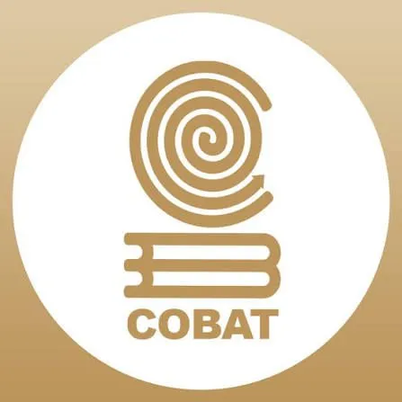
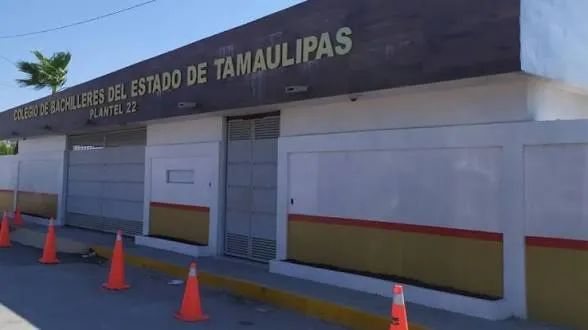

El Colegio de Bachilleres del Estado de Tamaulipas (COBAT) es una institución líder en educación media superior. Nuestro objetivo es formar jóvenes con valores, pensamiento crítico y las herramientas necesarias para enfrentar los retos del futuro y la universidad.
El COBAT nació de la necesidad de brindar una educación de calidad en todo Tamaulipas. El Plantel 22, ubicado en Reynosa, surgió para atender a una comunidad creciente de jóvenes entusiastas, convirtiéndose rápidamente en un referente de excelencia académica y deportiva en la región.
¡Soy Orgullosamente COBAT! ✨